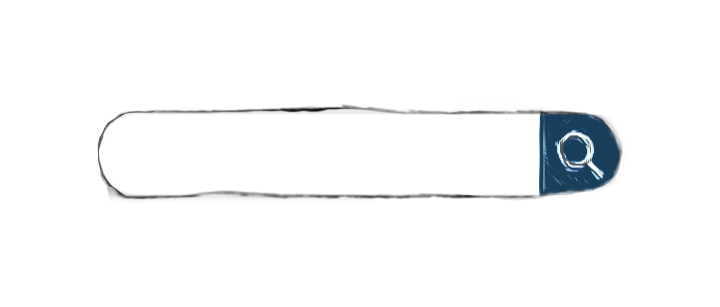
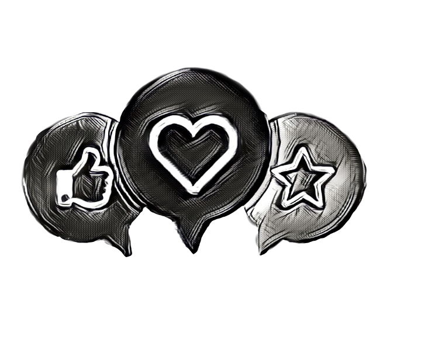

Une application pour les passionnés d'horlogerie
Et si il y avait des alternatives aux montres rares et chères qui pourraient nous plaire tout autant ?
Voici notre application horlogère unique qui vous permet d'explorer le monde fascinant des montres. Nous comprenons que certains modèles sont difficiles à se procurer ou tout simplement trop chers, c'est pourquoi notre application propose des alternatives à ces montres populaires.
Cette application met en avant une sélection de montres de haute qualité avec des fonctionnalités avancées. Grâce à notre interface intuitive, vous pouvez facilement naviguer dans notre catalogue et découvrir des montres que vous n'avez jamais vues auparavant.
INTRO
Dans le cadre de mon projet d'application sur l'horlogerie, j'ai cherché à trouver une problématique réelle en m'adressant directement aux utilisateurs potentiels. Pour ce faire, j'ai mené des interviews et des sondages auprès de collectionneurs de montres pour connaître leurs besoins et leurs attentes.
Ces échanges m'ont permis de recueillir des données précieuses sur les critères de sélection des collectionneurs lors de l'achat d'une montre, les fonctionnalités qu'ils apprécient le plus, ainsi que les difficultés qu'ils rencontrent lorsqu'ils cherchent à trouver des alternatives de qualité à des prix abordables. Ces informations ont servi de base à mes hypothèses et à mes idées de solutions pour créer une application adaptée. Grâce à cette approche centrée sur l'utilisateur, j'ai pu trouver une problématique réelle.
J'ai interviewer des particuliers, des revendeurs de montres vintages et également des créateurs de contenus.
Je remercie particulièrement Joah de la chaine "Montres et moi".
Voir la chaine YouTubeRENCONTRES
Lors des interviews avec des collectionneurs de montres, trois problématiques reviennent constamment.
01
La première concerne l'élitisme qui règne dans le milieu de l'horlogerie. En effet, beaucoup de collectionneurs se sentent exclus de ce monde réservé aux connaisseurs et aux riches. Les marques de luxe, telles que Rolex, Patek Philippe ou Audemars Piguet, sont souvent considérées comme inaccessibles pour les personnes qui ne font pas partie de l'élite financière. Cette exclusion est ressentie également par les nouveaux collectionneurs qui sont souvent mal accueillis ou mal conseillés dans les boutiques horlogères. Ils peuvent se sentir intimidés par les vendeurs ou les autres clients, qui connaissent mieux l'histoire de la marque ou les spécificités techniques des montres.
02
La deuxième problématique concerne le fait que certains modèles sont très difficiles à se procurer ou même trop chers pour la plupart des collectionneurs. En effet, les marques de luxe produisent souvent des éditions limitées ou des modèles très exclusifs, ce qui rend la tâche difficile pour les collectionneurs qui souhaitent acquérir ces montres.
03
De plus, la flambée des prix dans l'horlogerie de luxe est un sujet de préoccupation pour beaucoup de collectionneurs. Les montres haut de gamme ont vu leurs prix augmenter considérablement ces dernières années, rendant ces montres inabordables pour de nombreux passionnés.
PROBLEMES
solutions solutions solutions solutions solutions solutions
solutions solutions solutions solutions solutions solutions
Ma solution consiste en une application qui permet de trouver des alternatives abordables et de qualité à des montres chères ou rares, proposées par la communauté elle-même. Grâce à cette approche collaborative, les utilisateurs peuvent partager leurs connaissances et leurs astuces pour trouver des montres similaires à des prix raisonnables.
01
Cette solution permet de briser les barrières de l'élitisme et de rendre l'horlogerie accessible à un plus grand nombre d'amateurs. Les utilisateurs peuvent ainsi découvrir de nouvelles marques et de nouveaux modèles de montres, tout en bénéficiant de conseils de la part de la communauté.
02
L'application permet également de filtrer les résultats en fonction des critères de recherche, tels que le prix, la marque, le style, etc. Elle offre ainsi une expérience personnalisée et adaptée aux besoins de chaque utilisateur.
03
En résumé, ManyWatch permet de démocratiser l'accès à l'horlogerie en offrant des alternatives abordables et de qualité aux montres chères ou rares, tout en bénéficiant des connaissances et des conseils de la communauté.
SOLUTIONS
modules modules modules modules modules modules modules modules
modules modules modules modules modules modules modules modules
Lorsque j'ai imaginé mon application de montre, j'ai réfléchi à divers modules qui pourraient améliorer l'expérience de l'utilisateur. Parmi eux, j'ai envisagé la mise en place d'un système de barre de recherche pour faciliter la recherche de montres spécifiques, ainsi qu'une fonctionnalité permettant aux utilisateurs de marquer des montres en tant que "favoris".

Je pense que l'ajout d'un système de recherche faciliterait grandement la navigation dans l'application. Les utilisateurs pourraient entrer des termes de recherche tels que le nom de la marque ou le type de montre qu'ils recherchent, et l'application afficherait les résultats pertinents. Cela aiderait les utilisateurs à trouver rapidement les montres qui les intéressent sans avoir à parcourir de longues listes ou à naviguer à travers plusieurs menus.
La fonctionnalité de marquage de montres en tant que favoris serait également utile pour les utilisateurs. Ils pourraient facilement ajouter des montres qu'ils aiment à une liste de favoris, ce qui leur permettrait de les retrouver facilement plus tard. Cette fonctionnalité est particulièrement utile pour les utilisateurs qui souhaitent acheter une montre à l'avenir et qui souhaitent les garder en mémoire.
MODULES
Un exemple d'alternative. Un exemple d'alternative.
Un exemple d'alternative. Un exemple d'alternative.
La Rolex Dayjust est une montre de luxe très prisée dans le monde entier en raison de son design classique et de sa qualité supérieure. Cependant, son prix élevé peut rendre son achat inaccessible pour de nombreuses personnes.
Heureusement, il existe des alternatives plus abordables pour ceux qui cherchent à obtenir un look similaire à celui de la Dayjust sans dépenser une fortune. La Seiko 5 est une montre abordable qui offre une qualité respectable et qui est souvent considérée comme une alternative à la Rolex Dayjust. Elle est fabriquée avec des matériaux de qualité et offre une précision fiable grâce à son mouvement automatique.
Bien que la Seiko 5 ne soit pas une Rolex authentique, elle offre des caractéristiques similaires à un prix beaucoup plus abordable, ce qui en fait une option populaire pour ceux qui cherchent une montre de qualité sans dépenser une fortune.
En fin de compte, le choix entre une Rolex Dayjust ou une alternative plus abordable comme la Seiko 5 dépend de vos préférences personnelles et de votre budget, mais il est important de se rappeler que la qualité peut être accessible à un prix raisonnable.
EXEMPLES
La conception et une passion. La conception et une passion.
La conception et une passion. La conception et une passion.
Je me suis lancé dans la création de ce site web avec une passion ardente qui brûle en moi : l'horlogerie. Depuis mon plus jeune âge, je suis fasciné par le monde complexe et minutieux des montres, par leur mécanisme précis et leur esthétique intemporelle. J'ai donc choisi de consacrer mon site à cette passion dévorante qui ne cesse de grandir en moi.
Le choix du thème d'une application horlogère pour mon site était une évidence. Je voulais créer un espace où les amateurs de montres, tout comme moi, pourraient trouver des informations approfondies, des critiques objectives et des actualités passionnantes sur le monde horloger. Mon but était de partager ma passion avec d'autres personnes partageant les mêmes intérêts et de créer une communauté vibrante autour de cette fascination commune pour l'horlogerie.
En ce qui concerne le design de mon site, j'ai opté pour un style minimaliste et classique, directement inspiré des designs des montres elles-mêmes. J'ai cherché à capturer l'essence même de l'horlogerie en utilisant des lignes épurées, des couleurs sobres et des typographies élégantes. Chaque détail a été soigneusement pensé pour refléter l'artisanat minutieux et le raffinement qui caractérisent les montres haut de gamme.
J'ai voulu que mon site offre une expérience visuelle cohérente avec l'univers horloger. En naviguant sur les différentes pages, les visiteurs auront l'impression d'explorer les cadrans complexes d'une montre de luxe, où chaque élément est à sa place et contribue à l'harmonie générale. Le design minimaliste permet également de mettre en valeur les photographies détaillées des montres, en mettant l'accent sur leurs caractéristiques uniques et leur beauté intemporelle.
À travers mon site, j'aspire à transmettre ma passion pour l'horlogerie et à inspirer d'autres personnes à plonger dans cet univers captivant. Je souhaite offrir aux visiteurs une expérience immersive qui les transporte dans le monde fascinant des montres, où l'histoire, la technologie et l'élégance se rejoignent.